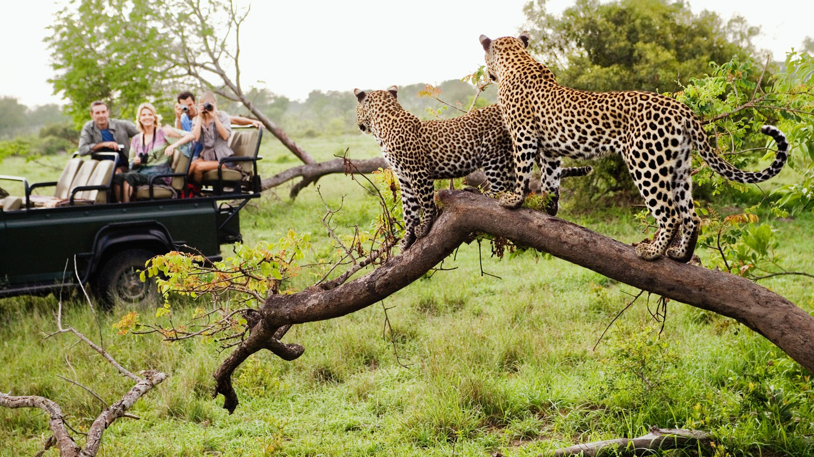

South Africa
Geography and Location
South Africa occupies the most southern tip of Africa with its long coastline stretching more than 3 000 km from the desert border with Namibia on the Atlantic coast southwards around the tip of Africa and then north to the border of subtropical Mozambique on the Indian Ocean.South Africa is a relatively dry country, with an average annual rainfall of about 464 mm. While the Western Cape gets most of its rainfall in winter, the rest of the country is generally a summer-rainfall region.
Explore South AfricaSouth Africa is a place where everyone should go at least once in their lives. From gorgeous weather, affordability, amazing beaches, vast wildlife, delicious wine and food, and breathtaking scenery everywhere you go!Whether you’re looking to meet interesting people, go hiking, horseback riding or game viewing, lazily laying at the beach or getting lunch at a scenic restaurant, this country has it all. South Africa provides great opportunities for those who prefer an outdoor lifestyle and opens your eyes up to diverse culture everywhere you go. |

|
|  |

|